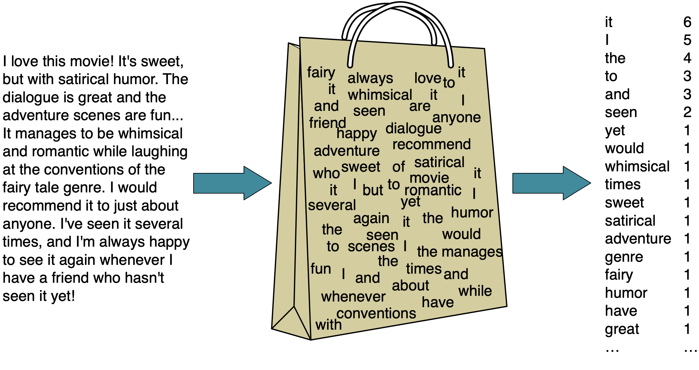

5. Preprocessing Categorical Features and Column Transformer¶
Hayley Boyce, May 3rd, 2021
# Importing our libraries
import pandas as pd
import altair as alt
import numpy as np
from sklearn.tree import DecisionTreeClassifier
from sklearn.dummy import DummyClassifier, DummyRegressor
from sklearn.neighbors import KNeighborsClassifier, KNeighborsRegressor
from sklearn.model_selection import cross_validate, train_test_split
from sklearn.svm import SVR, SVC
import sys
sys.path.append('code/')
from display_tree import display_tree
from plot_classifier import plot_classifier
import matplotlib.pyplot as plt
# Preprocessing and pipeline
from sklearn.impute import SimpleImputer
from sklearn.metrics.pairwise import euclidean_distances
from sklearn.pipeline import Pipeline
from sklearn.preprocessing import OneHotEncoder, OrdinalEncoder, StandardScaler, MinMaxScaler
5.1. House Keeping¶
Quiz on Wednesday
Grading issues contact these TAs:
Question 1 and 2: Andy
Question 3: Daniel
Question 4: Ali
Polls!
Assignment2 posted
5.2. Lecture Learning Objectives¶
Identify when it’s appropriate to apply ordinal encoding vs one-hot encoding.
Explain strategies to deal with categorical variables with too many categories.
Explain
handle_unknown="ignore"hyperparameter ofscikit-learn’sOneHotEncoder.Use the scikit-learn
ColumnTransformerfunction to implement preprocessing functions such asMinMaxScalerandOneHotEncoderto numeric and categorical features simultaneously.Use
ColumnTransformerto build all our transformations together into one object and use it withscikit-learnpipelines.Explain why text data needs a different treatment than categorical variables.
Use
scikit-learn’sCountVectorizerto encode text data.Explain different hyperparameters of
CountVectorizer.
5.3. Five Minute Recap/ Lightning Questions¶
Where does most of the work happen in \(k\)-nn -
fitorpredict?What are the 2 hyperparameters we looked at with Support Vector Machines with RBF kernel?
What is the range of values after Normalization?
Imputation will help data with missing values by removing which of the following; the column, the row or neither?
Pipelines help us not violate what?
5.3.1. Some lingering questions¶
What about categorical features??! How do we use them in our model!?
How do we combine everything?!
What about data with text?
5.4. Introducing Categorical Feature Preprocessing¶
Let’s bring back our California housing dataset that we explored last class. Remember we engineered some of the features in the data.
housing_df = pd.read_csv("data/housing.csv")
train_df, test_df = train_test_split(housing_df, test_size=0.1, random_state=123)
train_df = train_df.assign(rooms_per_household = train_df["total_rooms"]/train_df["households"],
bedrooms_per_household = train_df["total_bedrooms"]/train_df["households"],
population_per_household = train_df["population"]/train_df["households"])
test_df = test_df.assign(rooms_per_household = test_df["total_rooms"]/test_df["households"],
bedrooms_per_household = test_df["total_bedrooms"]/test_df["households"],
population_per_household = test_df["population"]/test_df["households"])
train_df = train_df.drop(columns=['total_rooms', 'total_bedrooms', 'population'])
test_df = test_df.drop(columns=['total_rooms', 'total_bedrooms', 'population'])
train_df.head()
| longitude | latitude | housing_median_age | households | median_income | median_house_value | ocean_proximity | rooms_per_household | bedrooms_per_household | population_per_household | |
|---|---|---|---|---|---|---|---|---|---|---|
| 6051 | -117.75 | 34.04 | 22.0 | 602.0 | 3.1250 | 113600.0 | INLAND | 4.897010 | 1.056478 | 4.318937 |
| 20113 | -119.57 | 37.94 | 17.0 | 20.0 | 3.4861 | 137500.0 | INLAND | 17.300000 | 6.500000 | 2.550000 |
| 14289 | -117.13 | 32.74 | 46.0 | 708.0 | 2.6604 | 170100.0 | NEAR OCEAN | 4.738701 | 1.084746 | 2.057910 |
| 13665 | -117.31 | 34.02 | 18.0 | 285.0 | 5.2139 | 129300.0 | INLAND | 5.733333 | 0.961404 | 3.154386 |
| 14471 | -117.23 | 32.88 | 18.0 | 1458.0 | 1.8580 | 205000.0 | NEAR OCEAN | 3.817558 | 1.004801 | 4.323045 |
Last class, we dropped the categorical feature ocean_proximity feature.
But it may help with our prediction! We’ve talked about how dropping columns is not always the best idea especially since we could be dropping potentially useful features.
Let’s create our X_train and X_test again but this time keeping the ocean_proximity feature in the data.
X_train = train_df.drop(columns=["median_house_value"])
y_train = train_df["median_house_value"]
X_test = test_df.drop(columns=["median_house_value"])
y_test = test_df["median_house_value"]
Can we make a pipeline and fit it with our X_train that has this column now?
pipe = Pipeline(
steps=[
("imputer", SimpleImputer(strategy="median")),
("scaler", StandardScaler()),
("reg", KNeighborsRegressor()),
]
)
pipe.fit(X_train, y_train)
---------------------------------------------------------------------------
ValueError Traceback (most recent call last)
<ipython-input-5-62f05099a2d9> in <module>
----> 1 pipe.fit(X_train, y_train)
/usr/local/lib/python3.8/site-packages/sklearn/pipeline.py in fit(self, X, y, **fit_params)
328 """
329 fit_params_steps = self._check_fit_params(**fit_params)
--> 330 Xt = self._fit(X, y, **fit_params_steps)
331 with _print_elapsed_time('Pipeline',
332 self._log_message(len(self.steps) - 1)):
/usr/local/lib/python3.8/site-packages/sklearn/pipeline.py in _fit(self, X, y, **fit_params_steps)
290 cloned_transformer = clone(transformer)
291 # Fit or load from cache the current transformer
--> 292 X, fitted_transformer = fit_transform_one_cached(
293 cloned_transformer, X, y, None,
294 message_clsname='Pipeline',
/usr/local/lib/python3.8/site-packages/joblib/memory.py in __call__(self, *args, **kwargs)
350
351 def __call__(self, *args, **kwargs):
--> 352 return self.func(*args, **kwargs)
353
354 def call_and_shelve(self, *args, **kwargs):
/usr/local/lib/python3.8/site-packages/sklearn/pipeline.py in _fit_transform_one(transformer, X, y, weight, message_clsname, message, **fit_params)
738 with _print_elapsed_time(message_clsname, message):
739 if hasattr(transformer, 'fit_transform'):
--> 740 res = transformer.fit_transform(X, y, **fit_params)
741 else:
742 res = transformer.fit(X, y, **fit_params).transform(X)
/usr/local/lib/python3.8/site-packages/sklearn/base.py in fit_transform(self, X, y, **fit_params)
691 else:
692 # fit method of arity 2 (supervised transformation)
--> 693 return self.fit(X, y, **fit_params).transform(X)
694
695
/usr/local/lib/python3.8/site-packages/sklearn/impute/_base.py in fit(self, X, y)
275 self : SimpleImputer
276 """
--> 277 X = self._validate_input(X, in_fit=True)
278 super()._fit_indicator(X)
279
/usr/local/lib/python3.8/site-packages/sklearn/impute/_base.py in _validate_input(self, X, in_fit)
247 new_ve = ValueError("Cannot use {} strategy with non-numeric "
248 "data:\n{}".format(self.strategy, ve))
--> 249 raise new_ve from None
250 else:
251 raise ve
ValueError: Cannot use median strategy with non-numeric data:
could not convert string to float: 'INLAND'
Well, that was rude.

It does not like the categorical column.
scikit-learn only accepts numeric data as an input and it’s not sure how to handle the ocean_proximity feature.
What now?
We can:
Drop the column (not recommended)
We can transform categorical features into numeric ones so that we can use them in the model.
There are two transformations we can do this with:
One-hot encoding (recommended in most cases)
5.5. Ordinal encoding¶
Ordinal encoding gives an ordinal numeric value to each unique value in the column.
Let’s take a look at a dummy dataframe to explain how to use ordinal encoding.
Here we have a categorical column specifying different movie ratings.
X_toy = pd.DataFrame({'rating':['Good', 'Bad', 'Good', 'Good',
'Bad', 'Neutral', 'Good', 'Good',
'Neutral', 'Neutral', 'Neutral','Good',
'Bad', 'Good']})
X_toy
| rating | |
|---|---|
| 0 | Good |
| 1 | Bad |
| 2 | Good |
| 3 | Good |
| 4 | Bad |
| 5 | Neutral |
| 6 | Good |
| 7 | Good |
| 8 | Neutral |
| 9 | Neutral |
| 10 | Neutral |
| 11 | Good |
| 12 | Bad |
| 13 | Good |
pd.DataFrame(X_toy['rating'].value_counts()).rename(columns={'rating': 'frequency'}).T
| Good | Neutral | Bad | |
|---|---|---|---|
| frequency | 7 | 4 | 3 |
Here we can simply assign an integer to each of our unique categorical labels.
We can use sklearn’s OrdinalEncoder transformer.
from sklearn.preprocessing import OrdinalEncoder
oe = OrdinalEncoder(dtype=int)
oe.fit(X_toy)
X_toy_ord = oe.transform(X_toy)
X_toy_ord
array([[1],
[0],
[1],
[1],
[0],
[2],
[1],
[1],
[2],
[2],
[2],
[1],
[0],
[1]])
Since sklearn’s transformed output is an array, we can add it next to our original column to see what happened.
encoding_view = X_toy.assign(rating_enc=X_toy_ord)
encoding_view
| rating | rating_enc | |
|---|---|---|
| 0 | Good | 1 |
| 1 | Bad | 0 |
| 2 | Good | 1 |
| 3 | Good | 1 |
| 4 | Bad | 0 |
| 5 | Neutral | 2 |
| 6 | Good | 1 |
| 7 | Good | 1 |
| 8 | Neutral | 2 |
| 9 | Neutral | 2 |
| 10 | Neutral | 2 |
| 11 | Good | 1 |
| 12 | Bad | 0 |
| 13 | Good | 1 |
we can see that each rating has been designated an integer value.
For example, Neutral is represented by an encoded value of 2 and Good a value of 1. Shouldn’t Good have a higher value?
We can change that by setting the parameter categories within OrdinalEncoder
ratings_order = ['Bad', 'Neutral', 'Good']
oe = OrdinalEncoder(categories = [ratings_order], dtype=int)
oe.fit(X_toy)
X_toy_ord = oe.transform(X_toy)
encoding_view = X_toy.assign(rating_enc=X_toy_ord)
encoding_view
| rating | rating_enc | |
|---|---|---|
| 0 | Good | 2 |
| 1 | Bad | 0 |
| 2 | Good | 2 |
| 3 | Good | 2 |
| 4 | Bad | 0 |
| 5 | Neutral | 1 |
| 6 | Good | 2 |
| 7 | Good | 2 |
| 8 | Neutral | 1 |
| 9 | Neutral | 1 |
| 10 | Neutral | 1 |
| 11 | Good | 2 |
| 12 | Bad | 0 |
| 13 | Good | 2 |
Now our Good rating is given an ordinal value of 2 and the Bad rating is encoded as 0.
But let’s see what happens if we look at a different column now, for example, a categorical column specifying different languages.
X_toy = pd.DataFrame({'language':['English', 'Vietnamese', 'English', 'Mandarin',
'English', 'English', 'Mandarin', 'English',
'Vietnamese', 'Mandarin', 'French','Spanish',
'Mandarin', 'Hindi']})
X_toy
| language | |
|---|---|
| 0 | English |
| 1 | Vietnamese |
| 2 | English |
| 3 | Mandarin |
| 4 | English |
| 5 | English |
| 6 | Mandarin |
| 7 | English |
| 8 | Vietnamese |
| 9 | Mandarin |
| 10 | French |
| 11 | Spanish |
| 12 | Mandarin |
| 13 | Hindi |
pd.DataFrame(X_toy['language'].value_counts()).rename(columns={'language': 'frequency'}).T
| English | Mandarin | Vietnamese | Hindi | French | Spanish | |
|---|---|---|---|---|---|---|
| frequency | 5 | 4 | 2 | 1 | 1 | 1 |
oe = OrdinalEncoder(dtype=int)
oe.fit(X_toy);
X_toy_ord = oe.transform(X_toy)
encoding_view = X_toy.assign(language_enc=X_toy_ord)
encoding_view
| language | language_enc | |
|---|---|---|
| 0 | English | 0 |
| 1 | Vietnamese | 5 |
| 2 | English | 0 |
| 3 | Mandarin | 3 |
| 4 | English | 0 |
| 5 | English | 0 |
| 6 | Mandarin | 3 |
| 7 | English | 0 |
| 8 | Vietnamese | 5 |
| 9 | Mandarin | 3 |
| 10 | French | 1 |
| 11 | Spanish | 4 |
| 12 | Mandarin | 3 |
| 13 | Hindi | 2 |
What’s the problem here though?
We have imposed ordinality on the feature that is no ordinal in value.
For example, imagine when you are calculating distances. Is it fair to say that French and Hindi are closer than French and Spanish?
In general, label encoding is useful if there is ordinality in your data and capturing it is important for your problem, e.g.,
[cold, warm, hot].
So what do we do when our values are not truly ordinal categories?
We can do something called …
5.6. One-Hot Encoding¶
One-hot encoding (OHE) creates a new binary column for each category in a categorical column.
If we have \(c\) categories in our column.
We create \(c\) new binary columns to represent those categories.
5.6.1. How to one-hot encode¶
from sklearn.preprocessing import OneHotEncoder
ohe = OneHotEncoder(sparse=False, dtype='int')
ohe.fit(X_toy);
X_toy_ohe = ohe.transform(X_toy)
X_toy_ohe
array([[1, 0, 0, 0, 0, 0],
[0, 0, 0, 0, 0, 1],
[1, 0, 0, 0, 0, 0],
[0, 0, 0, 1, 0, 0],
[1, 0, 0, 0, 0, 0],
[1, 0, 0, 0, 0, 0],
[0, 0, 0, 1, 0, 0],
[1, 0, 0, 0, 0, 0],
[0, 0, 0, 0, 0, 1],
[0, 0, 0, 1, 0, 0],
[0, 1, 0, 0, 0, 0],
[0, 0, 0, 0, 1, 0],
[0, 0, 0, 1, 0, 0],
[0, 0, 1, 0, 0, 0]])
We can convert it to a Pandas dataframe and see that instead of 1 column, we have 6! (We don’t need to do this step we are just showing you how it works)
pd.DataFrame(
data=X_toy_ohe,
columns=ohe.get_feature_names(['language']),
index=X_toy.index,
)
| language_English | language_French | language_Hindi | language_Mandarin | language_Spanish | language_Vietnamese | |
|---|---|---|---|---|---|---|
| 0 | 1 | 0 | 0 | 0 | 0 | 0 |
| 1 | 0 | 0 | 0 | 0 | 0 | 1 |
| 2 | 1 | 0 | 0 | 0 | 0 | 0 |
| 3 | 0 | 0 | 0 | 1 | 0 | 0 |
| 4 | 1 | 0 | 0 | 0 | 0 | 0 |
| 5 | 1 | 0 | 0 | 0 | 0 | 0 |
| 6 | 0 | 0 | 0 | 1 | 0 | 0 |
| 7 | 1 | 0 | 0 | 0 | 0 | 0 |
| 8 | 0 | 0 | 0 | 0 | 0 | 1 |
| 9 | 0 | 0 | 0 | 1 | 0 | 0 |
| 10 | 0 | 1 | 0 | 0 | 0 | 0 |
| 11 | 0 | 0 | 0 | 0 | 1 | 0 |
| 12 | 0 | 0 | 0 | 1 | 0 | 0 |
| 13 | 0 | 0 | 1 | 0 | 0 | 0 |
Let’s try this on our California housing dataset now.
Although ocean_proximity seems like an ordinal feature, let’s look at the possible categories.
X_train['ocean_proximity'].unique()
array(['INLAND', 'NEAR OCEAN', '<1H OCEAN', 'NEAR BAY', 'ISLAND'],
dtype=object)
How would you order these?
Should NEAR OCEAN be higher in value than NEAR BAY?
In unsure times, maybe one-hot encoding is the better option.
ohe = OneHotEncoder(sparse=False, dtype="int")
ohe.fit(X_train[["ocean_proximity"]])
X_imp_ohe_train = ohe.transform(X_train[["ocean_proximity"]])
X_imp_ohe_train
array([[0, 1, 0, 0, 0],
[0, 1, 0, 0, 0],
[0, 0, 0, 0, 1],
...,
[1, 0, 0, 0, 0],
[0, 0, 0, 1, 0],
[0, 1, 0, 0, 0]])
Ok great we’ve transformed our data, however, Just like before, the transformer outputs a NumPy array.
transformed_ohe = pd.DataFrame(
data=X_imp_ohe_train,
columns=ohe.get_feature_names(['ocean_proximity']),
index=X_train.index,
)
transformed_ohe.head()
| ocean_proximity_<1H OCEAN | ocean_proximity_INLAND | ocean_proximity_ISLAND | ocean_proximity_NEAR BAY | ocean_proximity_NEAR OCEAN | |
|---|---|---|---|---|---|
| 6051 | 0 | 1 | 0 | 0 | 0 |
| 20113 | 0 | 1 | 0 | 0 | 0 |
| 14289 | 0 | 0 | 0 | 0 | 1 |
| 13665 | 0 | 1 | 0 | 0 | 0 |
| 14471 | 0 | 0 | 0 | 0 | 1 |
5.6.2. What happens if there are categories in the test data, that are not in the training data?¶
Usually, if this is the case, an error will occur. (Not buying it? Try one hot-encoding in the assignment without this argument!)
In the OneHotEncoder we can specify handle_unknown="ignore" which will then create a row with all zeros.
That means that all categories that are not recognized to the transformer will appear the same for this feature.
You’ll get to use this in your assignment.
So our transformer above would then look like this:
ohe = OneHotEncoder(sparse=False, dtype="int", handle_unknown="ignore")
ohe.fit(X_train[["ocean_proximity"]])
X_imp_ohe_train = ohe.transform(X_train[["ocean_proximity"]])
X_imp_ohe_train
array([[0, 1, 0, 0, 0],
[0, 1, 0, 0, 0],
[0, 0, 0, 0, 1],
...,
[1, 0, 0, 0, 0],
[0, 0, 0, 1, 0],
[0, 1, 0, 0, 0]])
5.6.3. Cases where it’s OK to break the golden rule¶
If it’s some fixed number of categories.
For example, if the categories are provinces/territories of Canada, we know the possible values and we can just specify them.
If we know the categories, this might be a reasonable time to “violate the Golden Rule” (look at the test set) and just hard-code all the categories.
This syntax allows you to pre-define the categories.
provs_ters = ['AB', 'BC', 'MB', 'NB', 'NL', 'NS', 'NT', 'NU', 'ON', 'PE', 'QC', 'SK', 'YT']
ohe_cat_example = OneHotEncoder(categories=provs_ters)
5.7. Binary features¶
Let’s say we have the following toy feature, that contains information on if a beverage has caffeine in it or not.
X_toy = pd.DataFrame({'Caffeine':['No', 'Yes', 'Yes', 'No',
'Yes', 'No', 'No', 'No',
'Yes', 'No', 'Yes','Yes',
'No', 'Yes']})
X_toy
| Caffeine | |
|---|---|
| 0 | No |
| 1 | Yes |
| 2 | Yes |
| 3 | No |
| 4 | Yes |
| 5 | No |
| 6 | No |
| 7 | No |
| 8 | Yes |
| 9 | No |
| 10 | Yes |
| 11 | Yes |
| 12 | No |
| 13 | Yes |
When we do one-hot encoding on this feature, we get 2 separate columns.
ohe = OneHotEncoder(sparse=False, dtype='int')
ohe.fit(X_toy);
X_toy_ohe = ohe.transform(X_toy)
X_toy_ohe
array([[1, 0],
[0, 1],
[0, 1],
[1, 0],
[0, 1],
[1, 0],
[1, 0],
[1, 0],
[0, 1],
[1, 0],
[0, 1],
[0, 1],
[1, 0],
[0, 1]])
pd.DataFrame(
data=X_toy_ohe,
columns=ohe.get_feature_names(['Caffeine']),
index=X_toy.index,
)
| Caffeine_No | Caffeine_Yes | |
|---|---|---|
| 0 | 1 | 0 |
| 1 | 0 | 1 |
| 2 | 0 | 1 |
| 3 | 1 | 0 |
| 4 | 0 | 1 |
| 5 | 1 | 0 |
| 6 | 1 | 0 |
| 7 | 1 | 0 |
| 8 | 0 | 1 |
| 9 | 1 | 0 |
| 10 | 0 | 1 |
| 11 | 0 | 1 |
| 12 | 1 | 0 |
| 13 | 0 | 1 |
Do we really need 2 columns for this though?
Either something contains caffeine, or it does not. So we only really need 1 column for this.
So, for this feature with binary values, we can use an argument called drop within OneHotEncoder and set it to "if_binary".
ohe = OneHotEncoder(sparse=False, dtype='int', drop="if_binary")
ohe.fit(X_toy);
X_toy_ohe = ohe.transform(X_toy)
X_toy_ohe
array([[0],
[1],
[1],
[0],
[1],
[0],
[0],
[0],
[1],
[0],
[1],
[1],
[0],
[1]])
pd.DataFrame(
data=X_toy_ohe,
columns=ohe.get_feature_names(['Caffeine']),
index=X_toy.index,
)
| Caffeine_Yes | |
|---|---|
| 0 | 0 |
| 1 | 1 |
| 2 | 1 |
| 3 | 0 |
| 4 | 1 |
| 5 | 0 |
| 6 | 0 |
| 7 | 0 |
| 8 | 1 |
| 9 | 0 |
| 10 | 1 |
| 11 | 1 |
| 12 | 0 |
| 13 | 1 |
Now we see that after one-hot encoding we only get a single column where the encoder has arbitrarily chosen one of the two categories based on the sorting.
In this case, alphabetically it was ['No', 'Yes'] and it dropped the first category; No.
5.8. Do we actually want to use certain features for prediction?¶
Sometimes we may have column features like race or sex that may not be a good idea to include in your model.
The systems you build are going to be used in some applications.
It’s extremely important to be mindful of the consequences of including certain features in your predictive model.
Dropping the features like this to avoid racial and gender biases would be a strong suggestion.
5.9. Let’s Practice¶
name colour location seed shape sweetness water-content weight popularity
0 apple red canada True round True 84 100 popular
1 banana yellow mexico False long True 75 120 popular
2 cantaloupe orange spain True round True 90 1360 neutral
3 dragon-fruit magenta china True round False 96 600 not popular
4 elderberry purple austria False round True 80 5 not popular
5 fig purple turkey False oval False 78 40 neutral
6 guava green mexico True oval True 83 450 neutral
7 huckleberry blue canada True round True 73 5 not popular
8 kiwi brown china True round True 80 76 popular
9 lemon yellow mexico False oval False 83 65 popular
1. What would be the unique values given to the categories in the popularity column, if we transformed it with ordinal encoding?
a) [0, 1, 2, 3, 4, 5, 6, 7, 8, 9]
b) [0, 1, 2]
c) [1, 2, 3]
d) [0, 1, 2, 3]
2. Does it make sense to be doing ordinal transformations on the colour column?
3. If we one hot encoded the shape column, what datatype would be the output after using transform?
4. Which of the following outputs is the result of one-hot encoding the shape column?
a)
array([[0, 1, 0, 0, 0, 0, 0, 0, 0, 0],
[0, 0, 0, 0, 0, 1, 1, 0, 0, 1],
[1, 0, 1, 1, 1, 0, 0, 1, 1, 0]])
b)
array([[0, 0, 1],
[1, 0, 0],
[0, 0, 1],
[0, 0, 1],
[0, 0, 1],
[0, 1, 0],
[0, 1, 0],
[0, 0, 1],
[0, 0, 1],
[0, 1, 0]])
c)
array([[0, 1, 0, 0, 0, 0],
[0, 0, 0, 1, 0, 0],
[0, 0, 0, 0, 1, 0],
[0, 0, 1, 0, 0, 0],
[1, 0, 0, 0, 0, 0],
[0, 0, 0, 0, 0, 1],
[0, 0, 0, 1, 0, 0],
[0, 1, 0, 0, 0, 0],
[0, 0, 1, 0, 0, 0],
[0, 0, 0, 1, 0, 0]])
d)
array([[0],
[5],
[0],
[3],
[0],
[0],
[3],
[0],
[5],
[3],
[1],
[4],
[3],
[2]])
5. On which column(s) would you use OneHotEncoder(sparse=False, dtype=int, drop="if_binary")?
True or False?
6. Whenever we have categorical values, we should use ordinal encoding.
7. If we include categorical values in our feature table, sklearn will throw an error.
8. One-hot encoding a column with 5 unique categories will produce 5 new transformed columns.
9. The values in the new transformed columns after one-hot encoding, are all possible integer or float values.
10. It’s important to be mindful of the consequences of including certain features in your predictive model.
Solutions!
[0, 1, 2]No
NumPy array
b)
seed, sweetness
False
True
True
False
True
But ….now what?
How do we put this together with other columns in the data before fitting a regressor?
We want to apply different transformations to different columns.
Enter… ColumnTransformer.
5.10. ColumnTransformer¶
We left off wondering where to go after we transform our categorical features.
Problem: Different transformations on different columns.
Right now before we can even fit our regressor we have to apply different transformations on different columns:
Numeric columns
imputation
scaling
Categorical columns
imputation
one-hot encoding
What if we have features that are binary, features that are ordinal and features that need just standard one-hot encoding?
We can’t use a pipeline since not all the transformations are occurring on every feature.
We could do so without but then we would be violating the Golden Rule of Machine learning when we did cross-validation.
So we need a new tool and it’s called ColumnTransformer!
Sklearn’s ColumnTransformer makes this more manageable.
A big advantage here is that we build all our transformations together into one object, and that way we’re sure we do the same operations to all splits of the data.
Otherwise, we might, for example, do the OHE on both train and test but forget to scale the test data.

5.10.1. Applying ColumnTransformer¶
Let’s use this new tool on our California housing dataset.
Just like any new tool we use, we need to import it.
from sklearn.compose import ColumnTransformer
We must first identify the different feature types perhaps categorical and numeric columns in our feature table.
If we had binary values or ordinal features, we would split those up too.
X_train.head()
| longitude | latitude | housing_median_age | households | median_income | ocean_proximity | rooms_per_household | bedrooms_per_household | population_per_household | |
|---|---|---|---|---|---|---|---|---|---|
| 6051 | -117.75 | 34.04 | 22.0 | 602.0 | 3.1250 | INLAND | 4.897010 | 1.056478 | 4.318937 |
| 20113 | -119.57 | 37.94 | 17.0 | 20.0 | 3.4861 | INLAND | 17.300000 | 6.500000 | 2.550000 |
| 14289 | -117.13 | 32.74 | 46.0 | 708.0 | 2.6604 | NEAR OCEAN | 4.738701 | 1.084746 | 2.057910 |
| 13665 | -117.31 | 34.02 | 18.0 | 285.0 | 5.2139 | INLAND | 5.733333 | 0.961404 | 3.154386 |
| 14471 | -117.23 | 32.88 | 18.0 | 1458.0 | 1.8580 | NEAR OCEAN | 3.817558 | 1.004801 | 4.323045 |
X_train.info()
<class 'pandas.core.frame.DataFrame'>
Int64Index: 18576 entries, 6051 to 19966
Data columns (total 9 columns):
# Column Non-Null Count Dtype
--- ------ -------------- -----
0 longitude 18576 non-null float64
1 latitude 18576 non-null float64
2 housing_median_age 18576 non-null float64
3 households 18576 non-null float64
4 median_income 18576 non-null float64
5 ocean_proximity 18576 non-null object
6 rooms_per_household 18576 non-null float64
7 bedrooms_per_household 18391 non-null float64
8 population_per_household 18576 non-null float64
dtypes: float64(8), object(1)
memory usage: 1.4+ MB
numeric_features = [ "longitude",
"latitude",
"housing_median_age",
"households",
"median_income",
"rooms_per_household",
"bedrooms_per_household",
"population_per_household"]
categorical_features = ["ocean_proximity"]
Next, we build a pipeline for our dataset.
This means we need to make at least 2 preprocessing pipelines; one for the categorical and one for the numeric features!
(If we needed to use the ordinal encoder for binary data or ordinal features then we would need a third or fourth.)
numeric_transformer = Pipeline(
steps=[("imputer", SimpleImputer(strategy="median")),
("scaler", StandardScaler())]
)
categorical_transformer = Pipeline(
steps=[("imputer", SimpleImputer(strategy="constant", fill_value="missing")),
("onehot", OneHotEncoder(handle_unknown="ignore"))]
)
Next, we can actually make our ColumnTransformer.
col_transformer = ColumnTransformer(
transformers=[
("numeric", numeric_transformer, numeric_features),
("categorical", categorical_transformer, categorical_features)
],
remainder='passthrough'
)
We call the numeric and categorical features with their respective pipelines (transformers) in ColumnTransformer().
The ColumnTransformer syntax is somewhat similar to that of Pipeline in that you pass in a list of tuples.
But, this time, each tuple has 3 values instead of 2: (name of the step, transformer object, list of columns)
A big advantage here is that we build all our transformations together into one object, and that way we’re sure we do the same operations to all splits of the data.
What does remainder="passthrough" do?
The ColumnTransformer will automatically remove columns that are not being transformed.
AKA: the default value for
remainderis'drop'.
We can instead set remainder="passthrough" to keep the columns in our feature table which do not need any preprocessing.
We don’t have any columns that are being removed for this dataset, but this is important to know if we are only interested in a few features.
Now, you’ll start to foreshadow that just like we’ve seen with most syntax in sklearn we need to fit our ColumnTransformer.
col_transformer.fit(X_train)
ColumnTransformer(remainder='passthrough',
transformers=[('numeric',
Pipeline(steps=[('imputer',
SimpleImputer(strategy='median')),
('scaler', StandardScaler())]),
['longitude', 'latitude', 'housing_median_age',
'households', 'median_income',
'rooms_per_household',
'bedrooms_per_household',
'population_per_household']),
('categorical',
Pipeline(steps=[('imputer',
SimpleImputer(fill_value='missing',
strategy='constant')),
('onehot',
OneHotEncoder(handle_unknown='ignore'))]),
['ocean_proximity'])])
When we fit with the col_transformer, it calls fit on all the transformers.
And when we transform with the preprocessor, it calls transform on all the transformers.
How do we access information from this now? Let’s say I wanted to see the newly created columns from One-hot-encoding? How do I get those?
onehot_cols = col_transformer.named_transformers_["categorical"].named_steps["onehot"].get_feature_names(categorical_features)
onehot_cols
array(['ocean_proximity_<1H OCEAN', 'ocean_proximity_INLAND',
'ocean_proximity_ISLAND', 'ocean_proximity_NEAR BAY',
'ocean_proximity_NEAR OCEAN'], dtype=object)
Combining this with the numeric feature names gives us all the column names.
columns = numeric_features + list(onehot_cols)
columns
['longitude',
'latitude',
'housing_median_age',
'households',
'median_income',
'rooms_per_household',
'bedrooms_per_household',
'population_per_household',
'ocean_proximity_<1H OCEAN',
'ocean_proximity_INLAND',
'ocean_proximity_ISLAND',
'ocean_proximity_NEAR BAY',
'ocean_proximity_NEAR OCEAN']
Or we can look at what our X_train looks like after transformation.
(Ignore this code, you’ll not have to use it in the future, this is just for learning)
x = list(X_train.columns.values)
del x[5]
X_train_pp = col_transformer.transform(X_train)
pd.DataFrame(X_train_pp, columns= (x + list(col_transformer.named_transformers_["categorical"].named_steps["onehot"].get_feature_names(categorical_features)))).head()
| longitude | latitude | housing_median_age | households | median_income | rooms_per_household | bedrooms_per_household | population_per_household | ocean_proximity_<1H OCEAN | ocean_proximity_INLAND | ocean_proximity_ISLAND | ocean_proximity_NEAR BAY | ocean_proximity_NEAR OCEAN | |
|---|---|---|---|---|---|---|---|---|---|---|---|---|---|
| 0 | 0.908140 | -0.743917 | -0.526078 | 0.266135 | -0.389736 | -0.210591 | -0.083813 | 0.126398 | 0.0 | 1.0 | 0.0 | 0.0 | 0.0 |
| 1 | -0.002057 | 1.083123 | -0.923283 | -1.253312 | -0.198924 | 4.726412 | 11.166631 | -0.050132 | 0.0 | 1.0 | 0.0 | 0.0 | 0.0 |
| 2 | 1.218207 | -1.352930 | 1.380504 | 0.542873 | -0.635239 | -0.273606 | -0.025391 | -0.099240 | 0.0 | 0.0 | 0.0 | 0.0 | 1.0 |
| 3 | 1.128188 | -0.753286 | -0.843842 | -0.561467 | 0.714077 | 0.122307 | -0.280310 | 0.010183 | 0.0 | 1.0 | 0.0 | 0.0 | 0.0 |
| 4 | 1.168196 | -1.287344 | -0.843842 | 2.500924 | -1.059242 | -0.640266 | -0.190617 | 0.126808 | 0.0 | 0.0 | 0.0 | 0.0 | 1.0 |
Now let’s make a pipeline with our column transformer and a \(k\)-nn regressor.
The first step in this pipeline is our ColumnTransformer and the second is our \(k\)-nn regressor.
main_pipe = Pipeline(
steps=[
("preprocessor", col_transformer), # <-- this is the ColumnTransformer!
("reg", KNeighborsRegressor())])
We can then use cross_validate() and find our mean training and validation scores!
with_categorical_scores = cross_validate(main_pipe, X_train, y_train, return_train_score=True)
categorical_score = pd.DataFrame(with_categorical_scores)
categorical_score
| fit_time | score_time | test_score | train_score | |
|---|---|---|---|---|
| 0 | 0.057024 | 0.410002 | 0.695818 | 0.801659 |
| 1 | 0.039643 | 0.321133 | 0.707483 | 0.799575 |
| 2 | 0.043101 | 0.346134 | 0.713788 | 0.795944 |
| 3 | 0.041929 | 0.356720 | 0.686938 | 0.801232 |
| 4 | 0.038765 | 0.286461 | 0.724608 | 0.832498 |
categorical_score.mean()
fit_time 0.044092
score_time 0.344090
test_score 0.705727
train_score 0.806182
dtype: float64
In lecture 4, when we did not include this column, we obtain training and test scores of test_score 0.692972 and 0.797033 respectively so we can see a small increase.
if we had more columns, we could improve our scores in a much more substantial way instead of throwing the information away which is what we have been doing!
There are a lot of steps happening in ColumnTransformer, we can use set_config from sklearn and it will display a diagram of what is going on in our main pipeline.
from sklearn import set_config
set_config(display='diagram')
main_pipe
Pipeline(steps=[('preprocessor',
ColumnTransformer(remainder='passthrough',
transformers=[('numeric',
Pipeline(steps=[('imputer',
SimpleImputer(strategy='median')),
('scaler',
StandardScaler())]),
['longitude', 'latitude',
'housing_median_age',
'households',
'median_income',
'rooms_per_household',
'bedrooms_per_household',
'population_per_household']),
('categorical',
Pipeline(steps=[('imputer',
SimpleImputer(fill_value='missing',
strategy='constant')),
('onehot',
OneHotEncoder(handle_unknown='ignore'))]),
['ocean_proximity'])])),
('reg', KNeighborsRegressor())])ColumnTransformer(remainder='passthrough',
transformers=[('numeric',
Pipeline(steps=[('imputer',
SimpleImputer(strategy='median')),
('scaler', StandardScaler())]),
['longitude', 'latitude', 'housing_median_age',
'households', 'median_income',
'rooms_per_household',
'bedrooms_per_household',
'population_per_household']),
('categorical',
Pipeline(steps=[('imputer',
SimpleImputer(fill_value='missing',
strategy='constant')),
('onehot',
OneHotEncoder(handle_unknown='ignore'))]),
['ocean_proximity'])])['longitude', 'latitude', 'housing_median_age', 'households', 'median_income', 'rooms_per_household', 'bedrooms_per_household', 'population_per_household']
SimpleImputer(strategy='median')
StandardScaler()
['ocean_proximity']
SimpleImputer(fill_value='missing', strategy='constant')
OneHotEncoder(handle_unknown='ignore')
KNeighborsRegressor()
print(main_pipe)
Pipeline(steps=[('preprocessor',
ColumnTransformer(remainder='passthrough',
transformers=[('numeric',
Pipeline(steps=[('imputer',
SimpleImputer(strategy='median')),
('scaler',
StandardScaler())]),
['longitude', 'latitude',
'housing_median_age',
'households',
'median_income',
'rooms_per_household',
'bedrooms_per_household',
'population_per_household']),
('categorical',
Pipeline(steps=[('imputer',
SimpleImputer(fill_value='missing',
strategy='constant')),
('onehot',
OneHotEncoder(handle_unknown='ignore'))]),
['ocean_proximity'])])),
('reg', KNeighborsRegressor())])
We can also look at this image which shows the more generic version of what happens in ColumnTransformer and where it stands in our main pipeline.

5.10.1.1. Do we need to preprocess categorical values in the target column?¶
Generally, there is no need for this when doing classification.
sklearnis fine with categorical labels (y-values) for classification problems.
5.11. Make Syntax¶
When we looked at our California housing dataset we had the following pipelines, ColumnTransformer and main pipeline with our model.
numeric_transformer = Pipeline(
steps=[("imputer", SimpleImputer(strategy="median")),
("scaler", StandardScaler())]
)
categorical_transformer = Pipeline(
steps=[("imputer", SimpleImputer(strategy="constant", fill_value="missing")),
("onehot", OneHotEncoder(handle_unknown="ignore"))]
)
col_transformer = ColumnTransformer(
transformers=[
("numeric", numeric_transformer, numeric_features),
("categorical", categorical_transformer, categorical_features)
],
remainder='passthrough'
)
main_pipe = Pipeline(
steps=[
("preprocessor", col_transformer),
("reg", KNeighborsRegressor())])
This seems great but it seems quite a lot.
Well, luckily there is another method and tool that helps make our life easier.
It’s call make_pipeline and make_column_transformer.
from sklearn.pipeline import make_pipeline
from sklearn.compose import make_column_transformer
5.11.1. make_pipeline¶
We can shorten our code when we use Pipeline from this:
model_pipeline = Pipeline(
steps=[
("scaling", StandardScaler()),
("reg", SVR())])
model_pipeline
Pipeline(steps=[('scaling', StandardScaler()), ('reg', SVR())])StandardScaler()
SVR()
print(model_pipeline)
Pipeline(steps=[('scaling', StandardScaler()), ('reg', SVR())])
to this:
model_pipeline = make_pipeline(
StandardScaler(), SVR())
model_pipeline
Pipeline(steps=[('standardscaler', StandardScaler()), ('svr', SVR())])StandardScaler()
SVR()
print(model_pipeline)
Pipeline(steps=[('standardscaler', StandardScaler()), ('svr', SVR())])
make_pipeline() is a shorthand for the Pipeline() constructor and does not permit, naming the steps.
Instead, their names will be set to the lowercase of their types automatically.
Now let’s adjust our code for our numeric and categoric pipelines for this data using make_pipeline instead of Pipeline().
numeric_transformer = make_pipeline(SimpleImputer(strategy="median"),
StandardScaler())
categorical_transformer = make_pipeline(
SimpleImputer(strategy="constant", fill_value="missing"),
OneHotEncoder()
)
preprocessor = ColumnTransformer(
transformers=[
("num", numeric_transformer, numeric_features),
("cat", categorical_transformer, categorical_features)
]
)
pipe = make_pipeline(preprocessor, SVR())
Look how much less effort our pipeline took!
Our ColumnTransformer may still have the same syntax but guess what?! We have a solution for that too!
5.12. make_column_transformer syntax¶
Just like make_pipeline(), we can make our column transformer with make_column_transformer().
This eliminates the need to designate names for the numeric and categorical transformations.
Our code goes from this:
preprocessor = ColumnTransformer(
transformers=[
("num", numeric_transformer, numeric_features),
("cat", categorical_transformer, categorical_features) ]
)
preprocessor
ColumnTransformer(transformers=[('num',
Pipeline(steps=[('simpleimputer',
SimpleImputer(strategy='median')),
('standardscaler',
StandardScaler())]),
['longitude', 'latitude', 'housing_median_age',
'households', 'median_income',
'rooms_per_household',
'bedrooms_per_household',
'population_per_household']),
('cat',
Pipeline(steps=[('simpleimputer',
SimpleImputer(fill_value='missing',
strategy='constant')),
('onehotencoder',
OneHotEncoder())]),
['ocean_proximity'])])['longitude', 'latitude', 'housing_median_age', 'households', 'median_income', 'rooms_per_household', 'bedrooms_per_household', 'population_per_household']
SimpleImputer(strategy='median')
StandardScaler()
['ocean_proximity']
SimpleImputer(fill_value='missing', strategy='constant')
OneHotEncoder()
print(preprocessor)
ColumnTransformer(transformers=[('num',
Pipeline(steps=[('simpleimputer',
SimpleImputer(strategy='median')),
('standardscaler',
StandardScaler())]),
['longitude', 'latitude', 'housing_median_age',
'households', 'median_income',
'rooms_per_household',
'bedrooms_per_household',
'population_per_household']),
('cat',
Pipeline(steps=[('simpleimputer',
SimpleImputer(fill_value='missing',
strategy='constant')),
('onehotencoder',
OneHotEncoder())]),
['ocean_proximity'])])
to this:
preprocessor = make_column_transformer(
(numeric_transformer, numeric_features),
(categorical_transformer, categorical_features))
preprocessor
ColumnTransformer(transformers=[('pipeline-1',
Pipeline(steps=[('simpleimputer',
SimpleImputer(strategy='median')),
('standardscaler',
StandardScaler())]),
['longitude', 'latitude', 'housing_median_age',
'households', 'median_income',
'rooms_per_household',
'bedrooms_per_household',
'population_per_household']),
('pipeline-2',
Pipeline(steps=[('simpleimputer',
SimpleImputer(fill_value='missing',
strategy='constant')),
('onehotencoder',
OneHotEncoder())]),
['ocean_proximity'])])['longitude', 'latitude', 'housing_median_age', 'households', 'median_income', 'rooms_per_household', 'bedrooms_per_household', 'population_per_household']
SimpleImputer(strategy='median')
StandardScaler()
['ocean_proximity']
SimpleImputer(fill_value='missing', strategy='constant')
OneHotEncoder()
print(preprocessor)
ColumnTransformer(transformers=[('pipeline-1',
Pipeline(steps=[('simpleimputer',
SimpleImputer(strategy='median')),
('standardscaler',
StandardScaler())]),
['longitude', 'latitude', 'housing_median_age',
'households', 'median_income',
'rooms_per_household',
'bedrooms_per_household',
'population_per_household']),
('pipeline-2',
Pipeline(steps=[('simpleimputer',
SimpleImputer(fill_value='missing',
strategy='constant')),
('onehotencoder',
OneHotEncoder())]),
['ocean_proximity'])])
This eliminates the need to designate names for the numeric and categorical transformations.
So our whole thing becomes:
numeric_transformer = make_pipeline(SimpleImputer(strategy="median"),
StandardScaler())
categorical_transformer = make_pipeline(
SimpleImputer(strategy="constant", fill_value="missing"),
OneHotEncoder())
preprocessor = make_column_transformer(
(numeric_transformer, numeric_features),
(categorical_transformer, categorical_features))
pipe = make_pipeline(preprocessor, SVR())
scores = cross_validate(pipe, X_train, y_train, cv=5, return_train_score=True)
pd.DataFrame(scores)
| fit_time | score_time | test_score | train_score | |
|---|---|---|---|---|
| 0 | 9.149653 | 1.284505 | -0.029288 | -0.048769 |
| 1 | 8.712222 | 1.326230 | -0.060164 | -0.046902 |
| 2 | 8.995087 | 1.212516 | -0.057491 | -0.048523 |
| 3 | 8.452476 | 1.250952 | -0.046167 | -0.047366 |
| 4 | 8.512399 | 1.317137 | -0.050141 | -0.049123 |
5.13. Let’s Practice¶
Refer to the dataframe to answer the following question.
colour location shape water_content weight
0 red canada NaN 84 100
1 yellow mexico long 75 120
2 orange spain NaN 90 NaN
3 magenta china round NaN 600
4 purple austria NaN 80 115
5 purple turkey oval 78 340
6 green mexico oval 83 NaN
7 blue canada round 73 535
8 brown china NaN NaN 1743
9 yellow mexico oval 83 265
1. How many categorical columns are there and how many numeric?
2. What transformations are being done to both numeric and categorical columns?
Use the diagram below to answer the following questions.
Pipeline(
steps=[('columntransformer',
ColumnTransformer(
transformers=[('pipeline-1',
Pipeline(
steps=[('simpleimputer',
SimpleImputer(strategy='median')),
('standardscaler',
StandardScaler())]),
['water_content', 'weight', 'carbs']),
('pipeline-2',
Pipeline(
steps=[('simpleimputer',
SimpleImputer(fill_value='missing',
strategy='constant')),
('onehotencoder',
OneHotEncoder(handle_unknown='ignore'))]),
['colour', 'location', 'seed', 'shape', 'sweetness',
'tropical'])])),
('decisiontreeclassifier', DecisionTreeClassifier())])
3. How many columns are being transformed in pipeline-1?
4. Which pipeline is transforming the categorical columns?
5. What model is the pipeline fitting on?
True or False
6. If there are missing values in both numeric and categorical columns, we can specify this in a single step in the main pipeline.
7. If we do not specify remainder="passthrough" as an argument in ColumnTransformer, the columns not being transformed will be dropped.
8. Pipeline() is the same as make_pipeline() but make_pipeline() requires you to name the steps.
Solutions!
3 categoric columns and 2 numeric columns
Imputation
3
pipeline-2DecisionTreeClassifierFalse
True
False
5.14. Text Data¶
Machine Learning algorithms that we have seen so far prefer numeric and fixed-length input that looks like this.
and $\(y = \begin{bmatrix}spam \\ non spam \\ spam \end{bmatrix}\)$
But what if we are only given data in the form of raw text and associated labels?
How can we represent such data into a fixed number of features?
Spam/non-spam toy example
Would you be able to apply the algorithms we have seen so far on the data that looks like this?
and
In categorical features or ordinal features, we have a fixed number of categories.
In text features such as above, each feature value (i.e., each text message) is going to be different.
How do we encode these features?
5.15. Bag of words (BOW) representation¶
{kind=link}
Attribution: Daniel Jurafsky & James H. Martin
One way is to use a simple bag of words (BOW) representation which involves two components.
The vocabulary (all unique words in all documents)
A value indicating either the presence or absence or the count of each word in the document.
5.15.1. Extracting BOW features using scikit-learn¶
Let’s say we have 1 feature in our X dataframe consisting of the following text messages.
In our target column, we have the classification of each message as either spam or non spam.
X = [
"URGENT!! As a valued network customer you have been selected to receive a £900 prize reward!",
"Lol you are always so convincing.",
"Nah I don't think he goes to usf, he lives around here though",
"URGENT! You have won a 1 week FREE membership in our £100000 prize Jackpot!",
"Had your mobile 11 months or more? U R entitled to Update to the latest colour mobiles with camera for Free! Call The Mobile Update Co FREE on 08002986030",
"As per your request 'Melle Melle (Oru Minnaminunginte Nurungu Vettam)' has been set as your callertune for all Callers. Press *9 to copy your friends Callertune"]
y = ["spam", "non spam", "non spam", "spam", "spam", "non spam"]
We import a tool called CountVectorizer.
from sklearn.feature_extraction.text import CountVectorizer
We use CountVectorizer to convert text data into feature vectors where:
Each row represents a “document” (e.g., a text message in our example).
Each feature is a unique word in the text
Each feature value represents the frequency or presence/absence of the word in the given message
In the NLP community, a text data set is referred to as a corpus (plural: corpora).
The features should be a 1 dimension array as an input.
vec = CountVectorizer()
X_counts = vec.fit_transform(X);
bow_df = pd.DataFrame(X_counts.toarray(), columns=sorted(vec.vocabulary_), index=X)
bow_df
| 08002986030 | 100000 | 11 | 900 | all | always | are | around | as | been | ... | update | urgent | usf | valued | vettam | week | with | won | you | your | |
|---|---|---|---|---|---|---|---|---|---|---|---|---|---|---|---|---|---|---|---|---|---|
| URGENT!! As a valued network customer you have been selected to receive a £900 prize reward! | 0 | 0 | 0 | 1 | 0 | 0 | 0 | 0 | 1 | 1 | ... | 0 | 1 | 0 | 1 | 0 | 0 | 0 | 0 | 1 | 0 |
| Lol you are always so convincing. | 0 | 0 | 0 | 0 | 0 | 1 | 1 | 0 | 0 | 0 | ... | 0 | 0 | 0 | 0 | 0 | 0 | 0 | 0 | 1 | 0 |
| Nah I don't think he goes to usf, he lives around here though | 0 | 0 | 0 | 0 | 0 | 0 | 0 | 1 | 0 | 0 | ... | 0 | 0 | 1 | 0 | 0 | 0 | 0 | 0 | 0 | 0 |
| URGENT! You have won a 1 week FREE membership in our £100000 prize Jackpot! | 0 | 1 | 0 | 0 | 0 | 0 | 0 | 0 | 0 | 0 | ... | 0 | 1 | 0 | 0 | 0 | 1 | 0 | 1 | 1 | 0 |
| Had your mobile 11 months or more? U R entitled to Update to the latest colour mobiles with camera for Free! Call The Mobile Update Co FREE on 08002986030 | 1 | 0 | 1 | 0 | 0 | 0 | 0 | 0 | 0 | 0 | ... | 2 | 0 | 0 | 0 | 0 | 0 | 1 | 0 | 0 | 1 |
| As per your request 'Melle Melle (Oru Minnaminunginte Nurungu Vettam)' has been set as your callertune for all Callers. Press *9 to copy your friends Callertune | 0 | 0 | 0 | 0 | 1 | 0 | 0 | 0 | 2 | 1 | ... | 0 | 0 | 0 | 0 | 1 | 0 | 0 | 0 | 0 | 3 |
6 rows × 72 columns
5.15.2. Important hyperparameters of CountVectorizer¶
There are many useful and important hyperparameters of CountVectorizer.
binary:Whether to use absence/presence feature values or counts.
max_features:Only considers top
max_featuresordered by frequency in the corpus.
max_df:When building the vocabulary ignore terms that have a document frequency strictly higher than the given threshold.
min_df:When building the vocabulary ignore terms that have a document frequency strictly lower than the given threshold.
ngram_range:Consider word sequences in the given range.
X
['URGENT!! As a valued network customer you have been selected to receive a £900 prize reward!',
'Lol you are always so convincing.',
"Nah I don't think he goes to usf, he lives around here though",
'URGENT! You have won a 1 week FREE membership in our £100000 prize Jackpot!',
'Had your mobile 11 months or more? U R entitled to Update to the latest colour mobiles with camera for Free! Call The Mobile Update Co FREE on 08002986030',
"As per your request 'Melle Melle (Oru Minnaminunginte Nurungu Vettam)' has been set as your callertune for all Callers. Press *9 to copy your friends Callertune"]
CountVectorizer is carrying out some preprocessing because of the default argument values.
Converting words to lowercase (
lowercase=True). Take a look at the word “urgent” In both cases.getting rid of punctuation and special characters (
token_pattern ='(?u)\\b\\w\\w+\\b')
vec.get_feature_names()
['08002986030',
'100000',
'11',
'900',
'all',
'always',
'are',
'around',
'as',
'been',
'call',
'callers',
'callertune',
'camera',
'co',
'colour',
'convincing',
'copy',
'customer',
'don',
'entitled',
'for',
'free',
'friends',
'goes',
'had',
'has',
'have',
'he',
'here',
'in',
'jackpot',
'latest',
'lives',
'lol',
'melle',
'membership',
'minnaminunginte',
'mobile',
'mobiles',
'months',
'more',
'nah',
'network',
'nurungu',
'on',
'or',
'oru',
'our',
'per',
'press',
'prize',
'receive',
'request',
'reward',
'selected',
'set',
'so',
'the',
'think',
'though',
'to',
'update',
'urgent',
'usf',
'valued',
'vettam',
'week',
'with',
'won',
'you',
'your']
bow_df
| 08002986030 | 100000 | 11 | 900 | all | always | are | around | as | been | ... | update | urgent | usf | valued | vettam | week | with | won | you | your | |
|---|---|---|---|---|---|---|---|---|---|---|---|---|---|---|---|---|---|---|---|---|---|
| URGENT!! As a valued network customer you have been selected to receive a £900 prize reward! | 0 | 0 | 0 | 1 | 0 | 0 | 0 | 0 | 1 | 1 | ... | 0 | 1 | 0 | 1 | 0 | 0 | 0 | 0 | 1 | 0 |
| Lol you are always so convincing. | 0 | 0 | 0 | 0 | 0 | 1 | 1 | 0 | 0 | 0 | ... | 0 | 0 | 0 | 0 | 0 | 0 | 0 | 0 | 1 | 0 |
| Nah I don't think he goes to usf, he lives around here though | 0 | 0 | 0 | 0 | 0 | 0 | 0 | 1 | 0 | 0 | ... | 0 | 0 | 1 | 0 | 0 | 0 | 0 | 0 | 0 | 0 |
| URGENT! You have won a 1 week FREE membership in our £100000 prize Jackpot! | 0 | 1 | 0 | 0 | 0 | 0 | 0 | 0 | 0 | 0 | ... | 0 | 1 | 0 | 0 | 0 | 1 | 0 | 1 | 1 | 0 |
| Had your mobile 11 months or more? U R entitled to Update to the latest colour mobiles with camera for Free! Call The Mobile Update Co FREE on 08002986030 | 1 | 0 | 1 | 0 | 0 | 0 | 0 | 0 | 0 | 0 | ... | 2 | 0 | 0 | 0 | 0 | 0 | 1 | 0 | 0 | 1 |
| As per your request 'Melle Melle (Oru Minnaminunginte Nurungu Vettam)' has been set as your callertune for all Callers. Press *9 to copy your friends Callertune | 0 | 0 | 0 | 0 | 1 | 0 | 0 | 0 | 2 | 1 | ... | 0 | 0 | 0 | 0 | 1 | 0 | 0 | 0 | 0 | 3 |
6 rows × 72 columns
We can use CountVectorizer() in a pipeline just like any other transformer.
pipe = make_pipeline(CountVectorizer(), SVC())
pipe.fit(X, y);
pipe.predict(X)
array(['spam', 'non spam', 'non spam', 'spam', 'spam', 'non spam'],
dtype='<U8')
pipe.score(X,y)
1.0
Here we get a perfect score on our toy dataset data that it’s seen already.
How well does it do on unseen data?
X_new = [
"Congratulations! You have been awarded $1000!",
"Mom, can you pick me up from soccer practice?",
"I'm trying to bake a cake and I forgot to put sugar in it smh. ",
"URGENT: please pick up your car at 2pm from servicing",
"Call 234950323 for a FREE consultation. It's your lucky day!" ]
y_new = ["spam", "non spam", "non spam", "non spam", "spam"]
pipe.score(X_new,y_new)
0.8
It’s not perfect but it seems to do well on this data too.
5.15.3. Is this a realistic representation of text data?¶
Of course, this is not a great representation of language.
We are throwing out everything we know about language and losing a lot of information.
It assumes that there is no syntax and compositional meaning in language.
…But it works surprisingly well for many tasks.
5.16. Let’s Practice¶
1. What is the size of the vocabulary for the examples below?
X = [ "Take me to the river",
"Drop me in the water",
"Push me in the river",
"dip me in the water"]
2. Which of the following is not a hyperparameter of CountVectorizer()?
a) binary
b) max_features
c) vocab
d) ngram_range
3. What kind of representation do we use for our vocabulary?
True or False
4. As you increase the value for the max_features hyperparameter of CountVectorizer, the training score is likely to go up.
5. If we encounter a word in the validation or the test split that’s not available in the training data, we’ll get an error.
Solutions!
10
c)
vocabBag of Words
True
False
5.17. Let’s Practice - Coding¶
We are going to bring in a new dataset for you to practice on. (Make sure you’ve downloaded it from the data folder from the lectures section in Canvas - we’ve named it balanced_tweets.csv).
This dataset contains a text column containing tweets associated with disaster keywords and a target column denoting whether a tweet is about a real disaster (1) or not (0). [Source]
# Loading in the data
tweets_df = pd.read_csv('data/balanced_tweets.csv').dropna(subset=['target'])
# Split the dataset into the feature table `X` and the target value `y`
X = tweets_df['text']
y = tweets_df['target']
# Split the dataset into X_train, X_test, y_train, y_test
X_train, X_test, y_train, y_test = train_test_split(X,y, test_size=0.2, random_state=7)
X_train.head()
Make a pipeline with
CountVectorizeras the first step andSVC()as the second.Perform 5 fold cross-validation using your pipeline and return the training score.
Convert the results into a dataframe.
What are the mean training and validation scores?
Train your pipeline on the training set.
Score the pipeline on the test set.
5.18. What We’ve Learned Today¶
How to process categorical features.
How to apply ordinal encoding vs one-hot encoding.
How to use
ColumnTransformer,make_pipelinemake_column_transformer.How to work with text data.
How to use
CountVectorizerto encode text data.What the different hyperparameters of
CountVectorizerare.